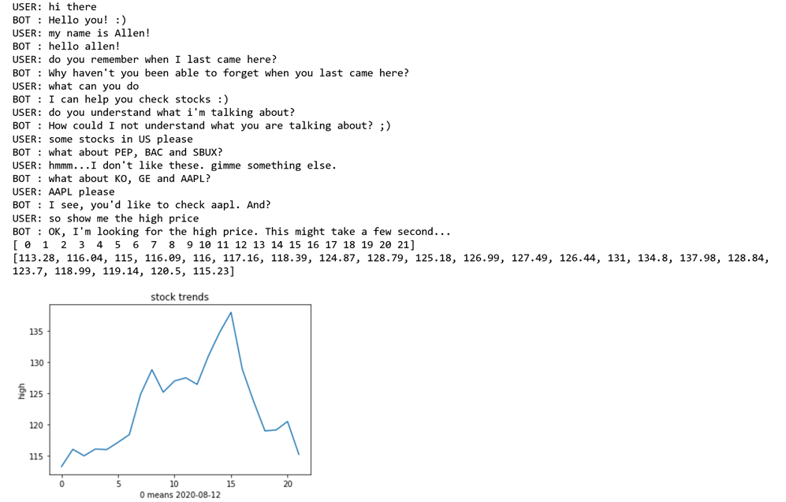

Remote Collaboration Project: Chatbot Design and Development


In this project we developed a chatbot for stock information retrieval that enables users to obtain the information they need in a natural and human-like way. The chatbot combines various technologies such as intent recognition and entity extraction, negation entity detection, and multi-round and multi-query technology to handle legacy tasks and refusal states. This chatbot can help novice users quickly enter the financial industry and focus on practical applications.
The system developed aims to achieve the following project control elements:
- Multiple choices for answering the same question and providing default answer solutions;
- Answering questions through regular expressions, pattern matching, keyword extraction, and syntactic transformation;
- Extracting user intent through regular expressions, nearest neighbor classification, support vector machine, or multiple other methods;
- Recognizing named entities based on pre-built entity types, role relationships, dependency analysis, etc.;
- Building a local basic chatbot system based on Rasa NLU;
- Querying the database and using natural language to explore database content (extracting parameters, creating queries, responding);
- Implementing single-round multiple incremental queries technology based on incremental filters and identifying negative entity technology;
- Implementing multi-round multi-query technology based on state machines and providing explanations and answers based on contextual issues;
- Handling refusal, wait state transition, and pending actions in multi-round and multi-query technology.
The project is divided into two parts: casual chat and stock recommendation/inquiry. Users can chat with the chatbot and also query stock information through multiple rounds of questions. As the queries are based on specific stocks, users need to first select the stocks they want to query before proceeding. For users who are not familiar with stocks, the chatbot can recommend some stocks first by querying the local database. After knowing the stocks they want to query, users can use multi-round queries to gradually let the chatbot obtain the information they need. For historical price queries, as the data volume is large, the chatbot can respond in a table format and send it as a file.
The programming language used for this project is Python, and the main tools used are Rasa NLU and spaCy. The core technologies used are: formatting responses based on regular expressions, intent recognition and entity extraction based on various techniques such as keywords, regular expressions, spaCy, and Rasa NLU; negation entity detection, local database query technology based on SQLite3; multi-round and multi-query technology based on state machine and waiting state conversion to handle legacy tasks and refusal states; stock information query based on IEX Finance API.